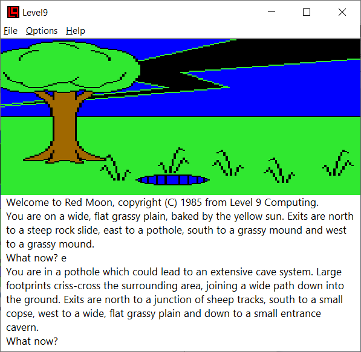
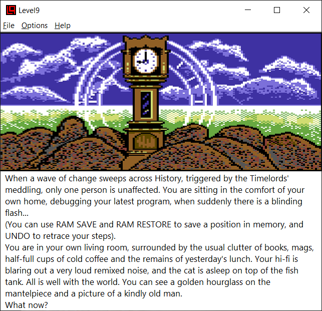

The Level9 interpreter was originally written by Glen Summers, and later extended by myself, along with Alan Staniforth, Simon Baldwin, Dieter Baron and Andreas Scherrer. It has the very useful ability to search for Level 9 game data in any file loaded into it, allowing it to find games in uncompressed memory dumps from emulators (such as the commonly used Spectrum emulator SNA file format). Both the line-drawn graphics used in a number of Level 9's ealier games and the bitmap graphics from later games are also supported.
The current version is available from Level9's GitHub release page. Ports to systems other than Windows are available from the IF-Archive, in the Level9 interpreter section.
Here are two screenshots of the interpreter in action: first Red Moon, and then Lords of Time.

